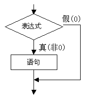
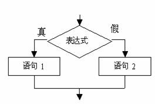
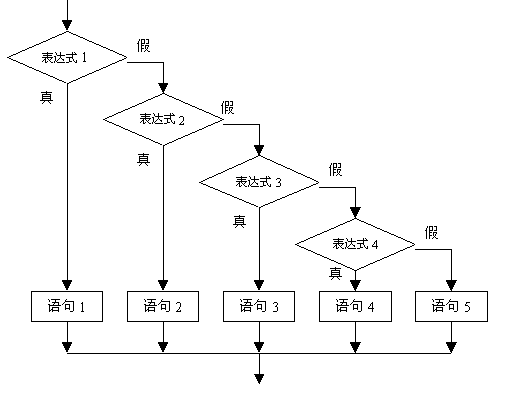

逻辑表达式的一般形式为：
表达式 逻辑运算符 表达式
其中的表达式可以又是逻辑表达式，从而组成了嵌套的情形。
例如：
(a&&b)&&c
根据逻辑运算符的左结合性，上式也可写为：
a&&b&&c
逻辑表达式的值是式中各种逻辑运算的最后值，以“1”和“0”分别代表“真”和“假”。
main(){
char c='k';
int i=1,j=2,k=3;
float x=3e+5,y=0.85;
printf("%d,%d\n",!x*!y,!!!x);
printf("%d,%d\n",x||i&&j-3,i<j&&x<y);
printf("%d,%d\n",i==5&&c&&(j=8),x+y||i+j+k);
}
本例中!x和!y分别为0，!x*!y也为0，故其输出值为0。由于x为非0，故!!!x的逻辑值为0。对x|| i && j-3式，先计算j-3的值为非0，再求i && j-3的逻辑值为1，故x||i&&j-3的逻辑值为 1。对i<j&&x<y式，由于i<j的值为1，而x<y为0故表达式的值为1，0相与，最后为0，对i==5&&c&&(j=8)式，由于i==5为假，即值为0，该表达式由两个与运算组成，所以整个表达式的值为0。对于式x+ y||i+j+k由于x+y的值为非0，故整个或表达式的值为1。
用if语句可以构成分支结构。它根据给定的条件进行判断，以决定执行某个分支程序段。Ｃ语言的if语句有三种基本形式。
if(表达式) 语句
其语义是：如果表达式的值为真，则执行其后的语句， 否则不执行该语句。其过程可表示为下图。

main(){
int a,b,max;
printf("\n input two numbers: ");
scanf("%d%d",&a,&b);
max=a;
if (max<b) max=b;
printf("max=%d",max);
}
本程序中，输入两个数a,b。把a先赋予变量max，再用if语句判别max和b的大小，如max小于b，则把b赋予max。因此max中总是大数，最后输出max的值。
if(表达式)
语句1；
else
语句2；
其语义是：如果表达式的值为真，则执行语句1，否则执行语句2 。
其执行过程可表示为下图。

main(){
int a, b;
printf("input two numbers: ");
scanf("%d%d",&a,&b);
if(a>b)
printf("max=%d\n",a);
else
printf("max=%d\n",b);
}
输入两个整数，输出其中的大数。
改用if-else语句判别a,b的大小，若a大，则输出a，否则输出b。
前二种形式的if语句一般都用于两个分支的情况。 当有多个分支选择时，可采用if-else-if语句，其一般形式为：
if(表达式1)
语句1；
else if(表达式2)
语句2；
else if(表达式3)
语句3；
…
else if(表达式m)
语句m；
else
语句n；
其语义是：依次判断表达式的值，当出现某个值为真时，则执行其对应的语句。然后跳到整个if语句之外继续执行程序。 如果所有的表达式均为假，则执行语句n。然后继续执行后续程序。 if-else-if语句的执行过程如图3—3所示。

#include <stdio.h>
main(){
char c;
printf("input a character: ");
c=getchar();
if(c<32)
printf("This is a control character\n");
else if(c>='0'&&c<='9')
printf("This is a digit\n");
else if(c>='A'&&c<='Z')
printf("This is a capital letter\n");
else if(c>='a'&&c<='z')
printf("This is a small letter\n");
else
printf("This is an other character\n");
}
本例要求判别键盘输入字符的类别。可以根据输入字符的ASCII码来判别类型。由ASCII码表可知ASCII值小于32的为控制字符。 在“0”和“9”之间的为数字，在“A”和“Z”之间为大写字母， 在“a”和“z”之间为小写字母，其余则为其它字符。 这是一个多分
支选择的问题，用if-else-if语句编程，判断输入字符ASCII码所在的范围，分别给出不同的输出。例如输入为“g”，输出显示它为小写字符。
1) 在三种形式的if语句中，在if关键字之后均为表达式。 该表达式通常是逻辑表达式或关系表达式， 但也可以是其它表达式，如赋值表达式等，甚至也可以是一个变量。
例如：
if(a=5) 语句；
if(b) 语句；
都是允许的。只要表达式的值为非0，即为“真”。
如在:
if(a=5)…；
中表达式的值永远为非0，所以其后的语句总是要执行的，当然这种情况在程序中不一定会出现，但在语法上是合法的。
又如，有程序段：
if(a=b)
printf("%d",a);
else
printf("a=0");
本语句的语义是，把b值赋予a，如为非0则输出该值，否则输出“a=0”字符串。这种用法在程序中是经常出现的。
2) 在if语句中，条件判断表达式必须用括号括起来，在语句之后必须加分号。
3) 在if语句的三种形式中，所有的语句应为单个语句，如果要想在满足条件时执行一组(多个)语句，必须把这一组语句用{}括起来组成一个复合语句。但要注意的是在}之后不能再加分号。
例如：
if(a>b)
{a++;
b++;}
else
{a=0;
b=10;}